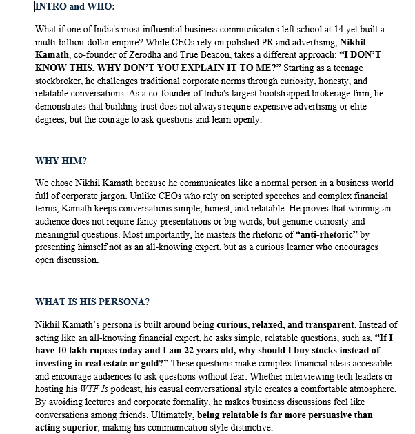
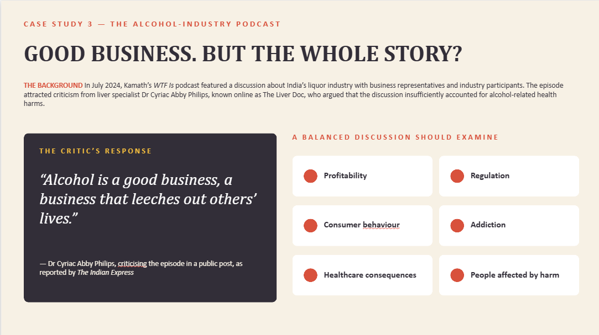

LLR: build the persona
Rebranding the persona of a business icon. My icon was Nikhil Kamath, co-founder of Zerodha and True Beacon.
What I did
- Researched the icon and prepared the information sheet introducing him to the audience.
- Delivered the introduction of the icon during the presentation to engage the audience.
- Presented the controversy around the icon's podcast on the alcohol industry in India.

